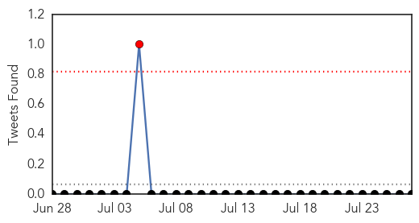

Dengue Fever
30-Day Web Trend
0 alerts, 0 warnings

30-Day Twitter Trend
1 alerts, 0 warnings

Article Locations

Article Confidences

Top Articles:
- 0.996
- Dengue fever cases spike in SA, Government urges travellers to protect themselves
- 0.994
- Suspects of Japanese Encephalitis surface, health department on toes
- 0.993
- Dengue cases on the rise, city hospitals placed on alert
- 0.979
- Samoa fears dengue spreading beyond Apia
- 0.957
- Dengue back in the capital, govt mulls awareness campaigns - Click Ittefaq
- 0.957
- Monsoon invites common health problems
- 0.946
- Diseases on wane in HCM City
- 0.764
- 10 dengue deaths over Hari Raya weekend
- 0.759
- TTD offers support to tackling dengue
- 0.749
- Door-to-door survey launched
Top Tweets:
-
No tweets found for Jul 27, 2015
Ebola
30-Day Web Trend
3 alerts, 0 warnings
30-Day Twitter Trend
2 alerts, 0 warnings
Article Locations

Article Confidences

Top Articles:
- 0.999
- Ebola Virus Disease not yet defeated in West Africa
- 0.999
- Malibu Doctor Treating Ebola Patients in Sierra Leone
- 0.999
- World Bank Group Pledges Additional $100 million to Speed New Health Workers to Ebola-stricken Countries
- 0.999
- It’s been a year: Doctor-Patient reflects on winning battle against Ebola
- 0.997
- Vaccines
- 0.994
- Noguchi Ebola Tests Results Trusted – Health Minister
- 0.984
- Salesian Missions launches emergency fund to assist efforts to contain deadly Ebola outbreak in West Africa, issues urgent appeal for donations
- 0.965
- Ebola Survivor Writes a Book about His Experience
- 0.964
- Imperfect vaccines could make viruses more dangerous, at least in chickens
- 0.941
- Leaky Vaccines Enhance Spread of Deadlier Chicken Viruses – Phenomena
- 0.923
- President Sirleaf Commends Healthcare Workers in Bomi County; Visits Quarantined West Point
- 0.904
- Doctor who had Ebola, wife share struggle to survive
- 0.904
- Ebola nurse honoured by Prime Minister
- 0.869
- E-Mist’s African initiative thrusts Fort Worth company back into spotlight
- 0.856
- Brantlys share struggle to survive Ebola
- 0.850
- Liberia Apologise to Nigeria Over Patrick Sawyer's Importation of Ebola to Nigeria
- 0.842
- Neoliberal Ebola: palm oil, logging, land grabs, ecological havoc and disease
- 0.840
- Neoliberal Ebola: palm oil, logging, land grabs, ecological havoc and disease
- 0.751
- LIBERIA: Ebola Discovered, Six Cases Reported Five Of The Victims Are Reported Deadd
- 0.661
- Palor Conteh fears prevalence of illegal burials
- 0.533
- Liberia Will Forever Be Grateful To Nigeria - Envoy
- 0.518
- Liberians Mark 168 Years of Independence
Top Tweets:
- 0.972
- King Salaman de BANLIEUZ'ART OFFICIEL a un petit message pour ebola ! Africa Stop Ebola http://t.co/GBFjFdl4Mo
- 0.914
- Quels systèmes de santé pour lutter contre Ebola et les autres urgences en Afrique subsaharienne ? http://t.co/tX5TvqIyRW
- 0.913
- RT: Core public health principles were used during the CDC response to the Ebola outbreak. Find out how. RoadtoZero https://t.co/…
- 0.788
- RT: .@MSF AfricaStopEbola "ce concours de chant est important car il faut à tout prix vaincre Ebola" TikenJahFakoly à Conakr…
- 0.759
- Must Read:-Sierra Leone begins treating Ebola patients with survivors' Plasma! http://t.co/1Y1R9muqUh Africaagainstebola
- 0.644
- RT: AfricaStopEbolaMSF merci aux artistes locaux et africains pour labmobilisation cintre Ebola Tiken Jah Fakoly ala blue zon…
- 0.625
- FACT: The ASEOWA health workers were deployed with-in a month of the Ebola crisis Africaagainstebola @WorldVisionEU
- 0.597
- RT: In latest update, @WHO reports no new Ebola cases in Liberia https://t.co/132mFYWj7J EbolaResponse http://t.co/7WhCgzrNUJ
- 0.588
- N'oubliez pas demain c'est la demi-finale du concours Africa Stop Ebola, likez et partagez notre page facebook... http://t.co/3wvX5zyuXw
- 0.541
- Ebola quarantine in SierraLeone leaves people without food hunger http://t.co/R30Run4LoF
- 0.500
- Joy, tears: Nancy Writebol talks about her journey on anniversary of Ebola ... - Winston-Salem Journal http://t.co/MsqODTsFbl ebola EVD